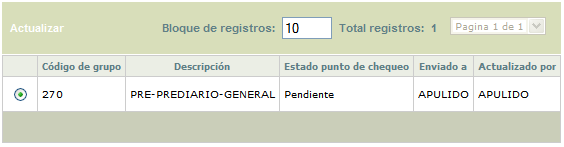
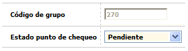

Manejo de puntos de chequeo
Esta función habilita la consulta y/o administración de los diferentes puntos de chequeo que han sido parametrizados para algunos Grupos de procesos. Una vez ejecutados todos los procesos de dichos grupos, el sistema permitirá al usuario decidir si se repite la ejecución, se revisa el resultado de algún proceso en particular, o finalmente se continúa con el proceso de automatización de la fecha correspondiente.
El formulario contiene la opción Actualizar.

Actualizar: Si el usuario invoca la opción Actualizar se despliega un nuevo formulario en el cual el único campo modificable es el Estado de punto de chequeo.

Código grupo |
Campo de salida que contiene el código del grupo que está parametrizado como punto de chequeo y al cual se le modificará el estado. |
Estado punto de chequeo |
Campo tipo combo obligatorio del cual se selecciona entre Ejecutar nuevamente o Continuar, para indicarle al sistema si debe ejecutar dicho proceso nuevamente y luego continuar con la automatización, o si puede continuar con dicha automatización según la programación de los grupos de procesos que estén pendientes. |